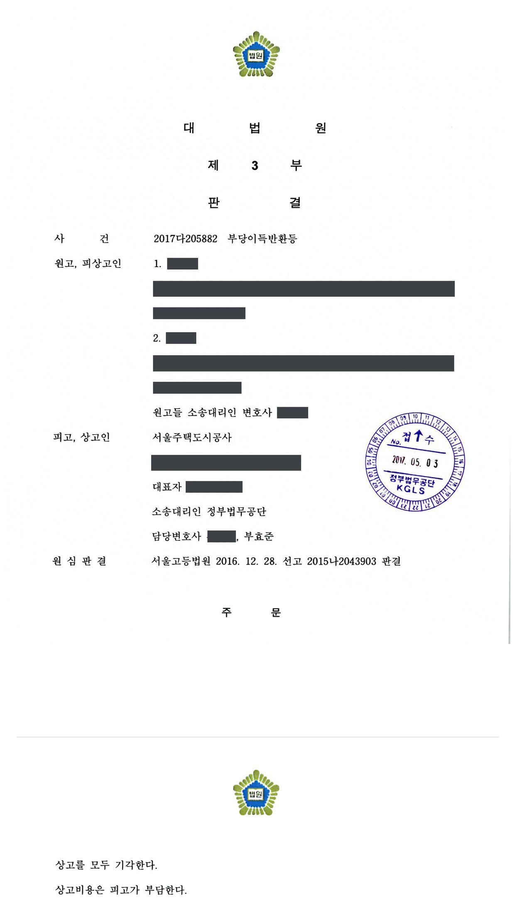

도시개발사업 이주대책 부당이득반환 청구소송 (2·3심)
서울고등법원 2015나2043903 · 대법원 2017다205882 · 담당변호사 부효준
판결문


사건의 요지
도시개발사업지구의 이주대책대상자들이 생활기본시설 설치비용 상당의 부당이득 반환을 구한 사건으로, 원고별 이주대책대상자 해당 여부가 다투어졌습니다. 항소심은 일부 원고에 대한 사업시행자 패소 부분을 취소했고, 대법원은 상고를 받아들이지 않았습니다.
사건의 주요 내용
한 도시개발사업(2003년 7월 9일 도시개발구역 지정을 위한 공람공고, 2003년 11월 구역 지정·개발계획 승인)의 사업시행자는 구역 안에 2,331세대의 아파트를 지어 분양하면서, 주택이나 토지가 구역에 편입된 사람들에게 이주대책의 하나로 아파트를 특별공급하였습니다. 특별공급 아파트를 분양받아 대금을 완납하고 대지권을 취득한 원고 4명은, 구 공익사업법 제78조 제4항에 따라 사업시행자가 부담해야 할 도로·상하수도 등 생활기본시설 설치비용(대지권 1㎡당 448,945원, 1인당 약 2,100만~4,400만 원)이 분양대금에 포함되어 있다며 그 반환을 청구하였습니다.
제1심(서울중앙지방법원 2014가합572357)은 2015년 7월 원고들의 청구를 일부 받아들였고 사업시행자만 항소하였습니다. 부효준 변호사는 항소심과 상고심에서 피고 사업시행자를 대리하였습니다.
항소심은 2016년 12월 공람공고일 뒤에 전입한 원고 2명에 대한 피고 패소 부분을 취소하고 그 청구를 모두 받아들이지 않았으며, 나머지 원고 2명에 대한 피고의 항소는 받아들이지 않았습니다. 피고가 그 두 원고 부분에 관하여 상고하였으나 대법원은 2017년 4월 심리불속행 판결로 상고심을 마무리하였습니다.
쟁점
- 도시개발사업에서 이주대책대상자의 거주요건을 판단하는 기준일이 도시개발구역 지정에 관한 공람공고일인지, 그 뒤에 전입한 소유자가 법정 이주대책대상자인지
- 법령상 이주대책대상자가 아닌 미거주 소유자에게 특별공급을 한 경우에도 구 공익사업법 제78조 제4항에 따른 생활기본시설 설치비용 부담 의무가 있는지
- 생활기본시설 설치비용을 산정할 때 무상귀속 도로 부지를 제외해야 하는지, 어떤 항목이 설치비용에 포함되는지
- 생활기본시설 설치비용 상당의 부당이득반환청구권에 상법상 5년의 소멸시효가 적용되는지
원고의 주장
- 원고들은 이주대책의 일환으로 아파트를 특별공급받은 이주대책대상자이므로, 분양대금 가운데 사업시행자가 부담해야 할 생활기본시설 설치비용 부분은 강행법규인 구 공익사업법 제78조 제4항에 위배되어 무효이고, 사업시행자는 그 상당액을 부당이득으로 반환해야 한다고 주장하였습니다.
- 생활기본시설 용지비는 구역 안의 도로 면적 161,609.4㎡ 전부를 기준으로 약 1,190억 원으로 산정해야 하고, 폐기물처리비·설계비·지적측량비·부대비도 생활기본시설 설치비용에 포함된다고 주장하였습니다.
부효준 변호사의 주장
- 원고 가운데 2명은 도시개발구역 지정에 관한 공람공고일(2003년 7월 9일) 뒤에야 구역 안의 주택에 전입하였으므로, 구 공익사업법 시행령 제40조 제3항 제2호가 이주대책대상자에서 제외하는 '계속하여 거주하고 있지 아니한 건축물의 소유자'에 해당하고, 이들에게 아파트를 특별공급한 것은 법령상 의무가 아닌 시혜적 조치이므로 제78조 제4항이 적용되지 않는다고 주장하였습니다.
- 국가나 지방자치단체로부터 무상으로 귀속받은 기존 도로 43,395㎡에는 용지비가 들지 않았으므로 그 부분은 도로용지비와 포장비 등 산정에서 제외해야 하고, 도로 가운데 존치면적도 빼야 한다고 다투었습니다.
- 특별공급 분양계약은 사업시행자가 상행위로 체결한 것이므로 그에 기한 부당이득반환채권에는 상법상 5년의 소멸시효가 적용되어 이미 시효가 완성되었다고 항변하였습니다.
법원의 판단
법원은 도시개발사업에서 이주대책대상자를 가리는 법정 이주대책기준일은 구 도시개발법령에 따른 도시개발구역 지정에 관한 공람공고일이라는 대법원 판례(2015. 10. 29. 선고 2014다14641 판결)에 따라 기준일을 2003년 7월 9일로 보았습니다. 원고 2명은 그 뒤인 2003년 10월과 2004년 6월에야 전입하였으므로 법령이 정한 이주대책대상자가 아니고, 사업시행자가 이들을 이주대책대상자에 포함시켰더라도 이는 시혜적인 조치여서 제78조 제4항이 적용되지 않는다고 보아(대법원 2014. 9. 4. 선고 2012다109811 판결, 2015. 10. 15. 선고 2015다27330 판결) 이들의 청구를 모두 받아들이지 않았습니다.
이주대책대상자임에 다툼이 없는 나머지 원고 2명에 대하여는 대법원 전원합의체 판결(2011. 6. 23. 선고 2007다63089 등)의 법리에 따라 반환의무를 인정하고 금액을 다시 산정하였습니다. 도로 용지비는 존치면적을 제외한 총 사업면적을 기준으로 하되 무상귀속 도로를 포함한 구역 안의 도로 전체를 기준으로 하였고(약 1,157억 원), 조성비 가운데 도로포장·우수·오수·상하수도 공사비, 하수처리부담금, 전기 지중화 비용, 전기통신 도급·이설·감리비는 인정하고 폐기물처리비·설계비·지적측량비·부대비는 제외하였으며, 직접인건비·판매비·일반관리비·자본비용을 더하여 유상공급면적 1㎡당 434,668원으로 계산하였습니다.
소멸시효에 관하여는 이주대책의 일환으로 체결된 분양계약을 영리 목적의 상행위로 단정할 수 없고, 강행규정 위반으로 무효가 된 부분의 반환청구를 상거래처럼 신속하게 해결할 필요도 없으므로 상법 제64조가 아니라 민법 제162조 제1항의 10년 시효가 적용된다고 보아(대법원 2016. 9. 28. 선고 2016다20244 판결) 피고의 항변을 받아들이지 않았습니다. 다시 계산한 금액은 제1심과 일부 달랐지만 피고만 항소한 사건이어서 불이익변경금지 원칙에 따라 이 부분 피고의 항소는 받아들여지지 않았고, 대법원도 2017년 4월 피고의 상고를 심리불속행으로 받아들이지 않아 그대로 확정되었습니다.
한편 도시개발법에 따른 공익사업의 시행에 있어서 법정 이주대책대상자의 범위에 관하여 보건대, 이주대책기준일이 되는 구 공익사업법 시행령 제40조 제3항 제2호의 '공익사업을 위한 관계 법령에 의한 고시 등이 있은 날'에는 토지수용 절차에 공익사업법을 준용하도록 한 관계 법률에서 사업인정의 고시 외에 주민 등에 대한 공람공고를 예정하고 있는 경우에는 사업인정의 고시일뿐만 아니라 공람공고일도 포함될 수 있는데(대법원 2009. 2. 26. 선고 2007두13340 판결 등 참조), 법령이 정하는 이주대책대상자에 해당되는지 여부를 판단하는 기준은 각 공익사업의 근거 법령에 따라 개별적으로 특정되어야 한다는 점과 아울러 도시개발법상 사업 진행의 절차, 도시개발법상 공익사업 시행에 따른 투기적 거래 방지 등의 정책적 필요성 등을 종합하면, 도시개발사업에서의 '관계 법령에 의한 고시 등이 있은 날'에 해당하는 법정 이주대책기준일은 구 도시개발법(2008. 3. 28. 법률 제9044호로 개정되기 전의 것) 제7조, 구 도시개발법 시행령(2013. 3. 23. 대통령령 제24443호로 개정되기 전의 것) 제11조 제2항, 제1항의 각 규정에 따른 도시개발구역의 지정에 관한 공람공고일이라고 봄이 타당하다(대법원 2015. 10. 29. 선고 2014다14641 판결 참조).
서울고등법원 2015나2043903 판결 이유 '3. 나. 관련 법리'(이주대책대상자 해당 여부)
나아가 사업시행자가 구 공익사업법 제78조 제1항, 구 공익사업법 시행령 제40조 제3항이 정한 이주대책대상자의 범위를 넘어 미거주 소유자까지 이주대책대상자에 포함시켰다고 하더라도, 법령에서 정한 이주대책대상자가 아닌 미거주 소유자에게 제공하는 이주대책은 법령에 의한 의무로서가 아니라 시혜적인 것으로 볼 것이므로, 사업시행자가 이러한 미거주 소유자에 대하여도 구 공익사업법 제78조 제4항에 따라 생활기본시설을 설치하여 줄 의무를 부담한다고 볼 수 없을 뿐만 아니라(대법원 2014. 9. 4. 선고 2012다109811 판결 참조), 법이 정한 이주대책대상자에 대하여만 이주대책의 내용으로서 사업시행자가 생활기본시설을 설치하고 그 비용을 부담하도록 강제한 구 공익사업법 제78조 제4항이 특별히 적용된다고 할 것이며, 이를 넘어서서 그 규정이 시혜적인 이주대책대상자에까지 적용된다고 볼 수도 없다(대법원 2015. 10. 15. 선고 2015다27330 판결 참조).
서울고등법원 2015나2043903 판결 이유 '3. 다. 2) 원고들의 해당 여부'
피고가 이 사건 각 분양계약에서 강행규정인 구 공익사업법 제78조 제4항에 위배하여 생활기본시설 설치비용을 분양대금에 포함시킴으로써 특별공급계약 중 그 부분이 무효가 되었음을 이유로 위 원고들이 민법의 규정에 따라 피고에게 이미 지급하였던 분양대금 중 그 부분에 해당하는 금액의 반환을 구하는 부당이득반환청구의 경우에도 상거래 관계와 같은 정도로 거래관계를 신속하게 해결할 필요성이 있다고 볼 수 없으므로 위 부당이득반환청구권에는 상법 제64조가 적용되지 아니하고, 그 소멸시효기간은 민법 제162조 제1항에 따라 10년으로 보아야 한다(대법원 2016. 9. 28. 선고 2016다20244 판결 참조).
서울고등법원 2015나2043903 판결 이유 '6. 소멸시효 완성 여부'
※ 판결 이유 가운데 이 사건의 판단 기준이 된 부분을 그대로 옮긴 것으로, 당사자 이름 등은 가렸습니다.
이 사건이 보여 주는 것
이주대책대상자에게 특별공급한 아파트의 분양대금에서 생활기본시설 설치비용을 돌려받는 소송에서는, 같은 아파트를 분양받았더라도 도시개발구역 지정 공람공고일 전부터 계약체결일 또는 수용재결일까지 계속 거주한 소유자만 법령상 이주대책대상자로서 반환을 청구할 수 있습니다. 공람공고일 뒤에 전입한 사람은 사업시행자가 특별공급을 해 주었더라도 그것이 시혜적 조치에 그치므로 청구가 받아들여지지 않습니다.
반환 금액은 용지비·조성비·간접비를 항목별로 따져 유상공급면적 1㎡당 금액으로 정해지는데, 무상귀속 도로를 제외하자는 사업시행자의 주장은 받아들여지지 않았습니다. 또한 이 반환청구권의 소멸시효는 5년이 아니라 10년이라는 점이 이 판결에서 확인되었으므로, 사업시행자 측은 시효 항변보다 원고별 거주요건과 전입 시점을 다투는 것이, 수분양자 측은 전입과 거주를 뒷받침하는 주민등록 자료를 갖추는 것이 중요합니다.
관련 법령구 공익사업을 위한 토지 등의 취득 및 보상에 관한 법률(2007. 10. 17. 법률 제8665호로 개정되기 전의 것) 제78조 제1항·제4항 · 구 공익사업법 시행령(2008. 2. 29. 대통령령 제20722호로 개정되기 전의 것) 제40조 제2항·제3항 제2호 · 도시개발법 제24조, 구 도시개발법 제7조, 구 도시개발법 시행령 제11조 · 구 주택법 제2조 제8호, 제23조(간선시설) · 상법 제64조, 민법 제162조 제1항 · 상고심절차에 관한 특례법 제4조, 제5조(심리불속행)
관련 단어이주대책대상자생활기본시설 설치비용부당이득반환특별공급 분양대금구 공익사업법 제78조 제4항도시개발구역 공람공고일미거주 소유자시혜적 이주대책무상귀속 도로소멸시효 10년상법 제64조사업시행자 대리심리불속행 확정
비슷한 처분을 받으셨다면
행정처분은 처분이 있음을 안 날부터 90일 이내에 행정심판이나 취소소송으로 다투어야 하고, 기간이 지나면 돌이킬 수 없는 처분은 집행정지를 서둘러야 합니다. 처분서를 받은 날짜부터 확인해 드립니다.